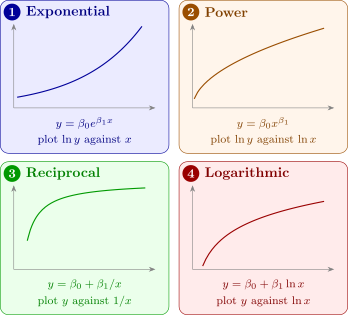

6.2 Transformations to linearize the model
A curved relationship can often be made straight. The models in Figure 12 are non-linear in \(x\), and some are non-linear in the parameters, but each becomes a straight line after transforming \(y\), \(x\) or both.

For the exponential model, \(\ln y = \ln \beta _0 + \beta _1 x\), a straight line in \(x\) with intercept \(\beta _0' = \ln \beta _0\). For the power model, \(\ln y = \ln \beta _0 + \beta _1\ln x\). The reciprocal and logarithmic models are already linear in the parameters, and need only the regressor \(x\) to be replaced by \(x' = 1/x\) or \(x' = \ln x\). A reciprocal model has a horizontal asymptote, \(y \to \beta _0\) as \(x \to \infty \), and suits a response that rises and levels off.
The error term needs thought. Fitting \(\ln y = \beta _0' + \beta _1 x + \varepsilon '\) by least squares assumes that the errors are additive, constant-variance and normal on the log scale, so that the original model is \[ y = \beta _0 e^{\beta _1 x}\varepsilon , \qquad \varepsilon = e^{\varepsilon '} , \] with a multiplicative error. That is often realistic: a growth process with errors of a roughly constant percentage. If instead the errors are additive on the original scale, \(y = \beta _0 e^{\beta _1 x} + \varepsilon \), then taking logs destroys the constant variance, and the model should be fitted by non-linear least squares, a subject of a later section. The residual plots of the transformed fit show which description fits the data.
Example 6.2.1. In Example 4.6.3 the straight line failed the lack-of-fit test, the yield rising with catalyst concentration and then levelling off. Fit \(y = \beta _0 + \beta _1(1/x) + \varepsilon \) and test it for lack of fit.
Solution. Let \(z = 1/x\), which takes the values \(1\), \(0.5\), \(0.3333\), \(0.25\), \(0.2\), each twice. Then \(\bar z = 2(2.2833)/10 = 0.45667\), and \[ S_{zz} = \sum (z_i - \bar z)^2 = 0.84178, \qquad S_{zy} = \sum (z_i - \bar z)y_i = -6.7800 , \] so \(\hat \beta _1 = -6.7800/0.84178 = -8.0544\) and \(\hat \beta _0 = 8.7 + 8.0544 \times 0.45667 = 12.378\): \[ \hat y = 12.378 - \frac {8.054}{x} . \] The fitted values at \(x = 1, \dots , 5\) are \(4.32\), \(8.35\), \(9.69\), \(10.36\), \(10.77\), against group means \(4.5\), \(7.5\), \(10.5\), \(10.5\), \(10.5\). Now \(SS_R = \hat \beta _1 S_{zy} = 54.61\), so \(SS_{\mathrm {Res}} = 60.1 - 54.61 = 5.49\), and with \(SS_{\mathrm {PE}} = 2.5\) as before (it does not depend on the model), \(SS_{\mathrm {LOF}} = 2.99\) on \(3\) degrees of freedom: \[ F_0 = \frac {2.99/3}{2.5/5} = \frac {0.997}{0.5} = 1.99 < F_{0.05,3,5} = 5.41 \quad (P = 0.23) . \] There is no longer evidence of lack of fit. \(R^2\) has risen from \(0.749\) to \(0.909\), with the same number of parameters, and \(MS_{\mathrm {Res}} = 5.49/8 = 0.69\) is now close to the pure-error estimate \(0.5\) of \(\sigma ^2\). The fitted curve levels off at \(\hat \beta _0 = 12.4\) g, the estimated yield at very high concentrations.
Example 6.2.2. The count \(y\) of a bacterial culture (thousands of cells per ml) was recorded hourly:
| Hour \(t\) | 0 | 1 | 2 | 3 | 4 | 5 | 6 | 7 |
| Count \(y\) | 10 | 17 | 25 | 32 | 48 | 70 | 117 | 164 |
Fit a suitable model and predict the count at \(t = 8\).
Solution. A straight line first. Least squares gives \(\hat y = -11.67 + 20.58t\), with \(R^2 = 0.861\). The residuals, \[ 21.7,\; 8.1,\; -4.5,\; -18.1,\; -22.7,\; -21.3,\; 5.2,\; 31.6 , \] are positive at both ends and negative in the middle: the curvature pattern of Figure 9. The residuals also grow in size with the fitted value. A culture grows by a roughly constant percentage each hour, which suggests the exponential model with multiplicative error, \(y = \beta _0 e^{\beta _1 t}\varepsilon \).
The log model. Let \(y' = \ln y\):
| \(t\) | 0 | 1 | 2 | 3 | 4 | 5 | 6 | 7 |
| \(\ln y\) | 2.3026 | 2.8332 | 3.2189 | 3.4657 | 3.8712 | 4.2485 | 4.7622 | 5.0999 |
\(\sum \ln y_i = 29.8021\), so \(\overline {y'} = 3.72527\); \(\bar t = 3.5\), \(S_{tt} = 42\), and \(S_{ty'} = \sum (t_i - 3.5)\ln y_i = 16.3600\). Hence \[ \hat \beta _1 = \frac {16.3600}{42} = 0.38952, \qquad \hat \beta _0' = 3.72527 - 0.38952 \times 3.5 = 2.36194 , \] \[ \widehat {\ln y} = 2.3619 + 0.3895t . \] The residuals on the log scale are \(-0.059\), \(0.082\), \(0.078\), \(-0.065\), \(-0.049\), \(-0.061\), \(0.063\), \(0.011\): small, of constant size and without a pattern. \(SS_{\mathrm {Res}} = 0.03069\), \(MS_{\mathrm {Res}} = 0.005115\) and \(R^2 = 0.995\).
Interpretation. On the original scale the fitted model is \[ \hat y = e^{2.3619}\,e^{0.3895t} = 10.61 \times 1.476^t . \] The (median) count is multiplied by \(e^{0.3895} = 1.476\) each hour: a growth rate of about \(48\%\) per hour, and a doubling time of \(\ln 2/0.3895 = 1.78\) hours.
Prediction at \(t = 8\). On the log scale, \(\widehat {\ln y}_0 = 2.3619 + 0.3895 \times 8 = 5.4781\). With \(h_0 = 1/8 + (8 - 3.5)^2/42 = 0.6071\) and \(t_{0.025,6} = 2.447\), the \(95\%\) prediction interval of Theorem 2.11.4 is \begin {align*} 5.4781 \pm 2.447\sqrt {0.005115 \times 1.6071} &= 5.4781 \pm 0.2219 \\ &= (5.2563,\ 5.7000) . \end {align*}
Exponentiating the end points, a new count at \(t = 8\) will lie between \(e^{5.2563} = 192\) and \(e^{5.7000} = 299\) thousand per ml, with probability \(0.95\). The point prediction \(e^{5.4781} = 239\) is the predicted median; the predicted mean, \(e^{5.4781 + 0.005115/2} = 240\), is barely different, because the error variance is so small. The interval is not symmetric about \(239\): on the original scale, the uncertainty is larger upwards, as it should be for a quantity that grows by percentages.
Questions on this section
Stuck on something here? Ask below and it stays attached to this topic.